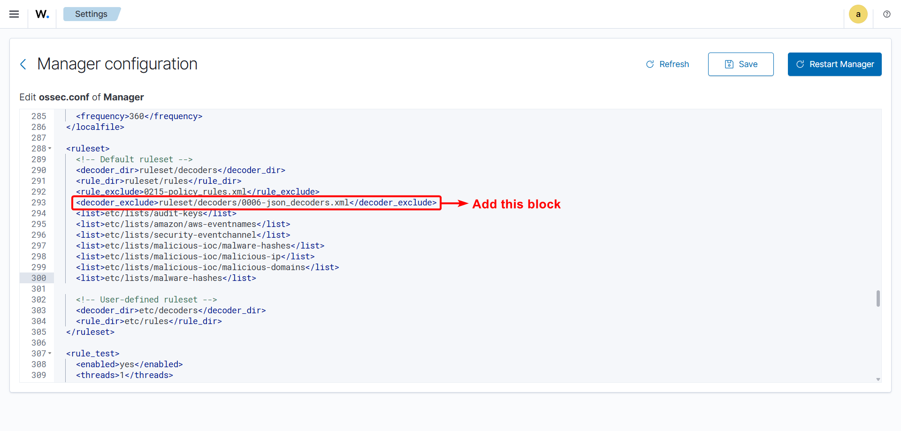

Manipulating JSON Decoders - Wazuh
Before creating any custom decoder, it is crucial to understand how JSON Decoders actually work. We know that Wazuh already has its prebuilt JSON Decoder known as
0006-json_decoders.xml. Inside, if you inspect the decoder, the built-in generic json decoder has this prematch:
{kind=link}
This matches any JSON starting with {", so it captures logs before our custom decoder can process them. Since ruleset decoders load before
custom decoders in /var/ossec/etc/decoders/, the generic decoder always wins. So basically what this means, no matter what decoder name we give, the prebuilt
JSON Decoder will override the custom JSON decoders’ name. For example, observe the image below:

Solution - Decoder Name Override Problem
To solve this problem it is required to exclude the prebuilt 0006-json_decoders.xml decoder. Dont’t worry we are not fully excluding it.
Obviously, we care about the thing that come with the defaults. We are basically going to make it or represent it as not the inbuilt decoder itself.
Step - 1: Copy the content of
0006-json_decoders.xmland paste it inlocal_decoder.xmlStep - 2: Exclude
0006-json_decoders.xmldecoder from executing in the Wazuh Manager.Save it, then restart the manager.
{kind=link}
This method actually preserves the built-in features of 0006-json_decoders.xml decoder while also making it usable for customization purposes.
Important
Order matters! Custom JSON Decoders must be defined BEFORE the generic json decoder. Other it won’t work as decoders are prioritized by order.